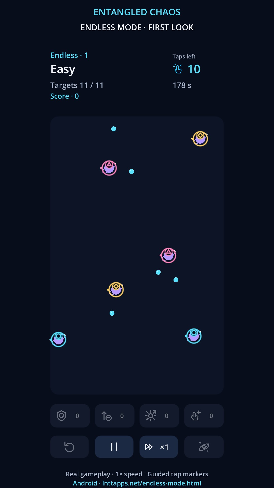
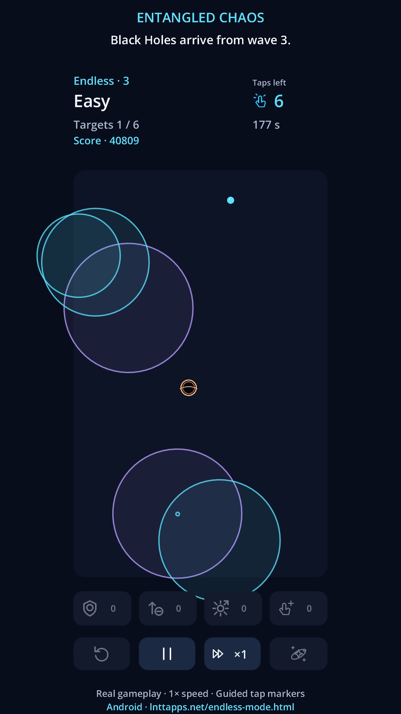

ENDLESS MODE · GAMEPLAY & STRATEGY · BY LNTT APPS
Ten taps. Changing waves. Meet Endless mode.
How long can you keep a chain reaction going? Endless mode turns Entangled Chaos into a continuous particle puzzle: clear a wave, carry your unused taps forward and decide where to place the next spark.
If you enjoy strategic puzzle games with levels, this is a different way to test the same skills. Campaign rounds offer individual objectives and replays for mastery. Endless asks you to manage a shared tap bank across a whole run, with new particles entering as each wave clears.
Get the latest game on Google Play ↗
Open Endless from the main menu. If the button is not visible, check Google Play for the latest update. Update availability can vary as a release reaches players.
Watch the Endless gameplay demo
Follow the first waves, see the tap bank change and watch a moving Black Hole join the field. This 44-second guided desktop capture uses the game’s real simulation at normal speed, with tap markers, captions and synthetic English narration. No items are used.
Playing the video requires an internet connection and loads YouTube’s privacy-enhanced player. Watch on YouTube ↗ · Privacy
How to play Endless mode
- Start with ten taps. Watch particles enter from the edges. Each accepted spark spends one tap, so look for a useful connection before you act.
- Follow the current wave’s objective. Clear its targets and pay attention when special objectives appear. A large explosion is useful only if it helps finish the wave.
- Carry your remaining taps forward. A successful wave adds a completion bonus to your bank. Unused taps give you more room to recover later.
- Adapt to new particles. Entangled pairs appear from the first wave; Black Holes arrive from wave three. Further into a run, other abilities change the choices you face.
- Learn from the end of a run. Losing ends that attempt. Restart begins at wave one with ten taps, a fresh layout and a new run score.
Wave bonuses: make the tap bank last
The reward arrives after a successful wave, rather than when the next wave enters. Only the highest applicable milestone bonus is awarded.
| Wave completed | Taps added |
|---|---|
| Ordinary wave | +1 |
| Multiple of 5, except multiples of 10 | +2 |
| Multiple of 10, except multiples of 100 | +5 |
| Multiple of 100 | +10 |
A one-tap clear on an ordinary wave replaces the tap you spent. Using several taps can still be the right choice when it saves the run, but your stock will fall faster. Plan for the difficult survivor rather than chasing the biggest-looking explosion.
Use Entangled pairs to connect distant targets
Matching Entangled partners can carry a reaction across the arena. Before sparking a dense group, find its partner elsewhere in the field. The distant reaction may reach targets that would otherwise need their own tap. Check both sides of the pair: a useful connection can also bring the chain closer to a hazard.


Black Holes: follow the whole chain
A spark can start safely and still reach a Black Hole through nearby particles. Watch the route the reaction is likely to take, allow the field to move and check the hole’s state. Black Holes introduced in a wave remain hazards under the normal rules. Surviving holes from a completed wave become protected while they travel out of the arena.
Other surviving particles can carry into the next wave too, so the board is a continuing world rather than a sequence of clean resets. A new run generates different positions and approaches. The demo shows one real example, not a guaranteed sequence of winning taps.
Optional tools, pause and rankings
Endless allows up to two item uses per wave. Tools use your owned stock; they are optional, and the demo uses none. Pause gives you a break, while the speed control changes playback speed. If a run ends, the result screen offers a new run or a return to the main menu, rather than a paid continuation.
Endless has its own leaderboard, separate from campaign rounds. Connected, eligible ranked play reports the final run result. Offline or guest play remains unranked; rankings and other online services require connectivity and availability.
A chain reaction puzzle game with two ways to play
Use the campaign to learn individual interactions and return to a particular puzzle. Choose Endless when you want changing waves, a growing run score and the tension of managing taps over time. Both reward watching motion and choosing a good moment for a spark. The physics-inspired particles follow fictional game rules, rather than modelling real laboratory physics.
For offline puzzle games on Android, prepare the content you need before disconnecting. Endless uses bundled wave compositions, while online features still need a connection. Our offline play guide explains the distinction.
How far will your next chain take you?
Find Entangled Chaos on Google Play and check for the latest update. The game contains ads and optional purchases. Follow the demo, then try a different starting spark and see what changes.
Find Entangled Chaos on Google Play ↗